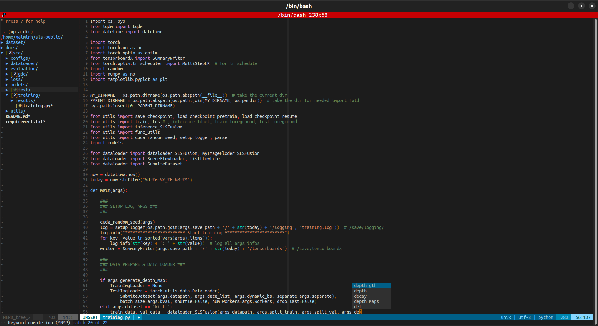

Basic Vim Usage
Introduction
As a developer, text editor is an important tool for me. In this blog post, we’ll explore the world of Vim and discover how it can revolutionize your programming workflow.  So, let’s start with reason it has gained a loyal following among developers:
Why Vim?
Vim offers several advantages as follows:
- Speed & Efficiency: maximize keyboard shortcuts and eliminate mouse usage.
- Customization: tailor the editor to your specific needs and preferences such as keyboard mappings.
- Extensibility: provide a vibrant plugin ecosystem, support various programming languages, code linting, autocompletion, and more.
Getting started with Vim
Installation
To begin your Vim journey, let’s set up the editor and install some handy plugins.
Install Vim:
apt install vim
Install plugin manager, VundleVim/Vundle.vim:
git clone https://github.com/VundleVim/Vundle.vim.git ~/.vim/bundle/Vundle.vim
Customize your Vim configuration by adding or updating plugins in ~/.vim/vimrc.
Download plugins (added in ~/.vim/vimrc) by launching vim, running :PluginInstall and then :source ~/.vim/vimrc. Alternatively, you can do both things from the command line using:
vim +PluginInstall +qall
As an example, you can check out MY-VIMRC:
apt purge vim && apt install vim
git clone https://github.com/VundleVim/Vundle.vim.git ~/.vim/bundle/Vundle.vim
wget --no-check-certificate --content-disposition https://maiminh1996.github.io/scripts/vimrc.txt -O ~/.vim/vimrc
vim +PluginInstall +qall
Three modes of Vim
Vim operates in three modes, each serving a specific purpose:
- Inserting and editing text: INSERT. Press
ito enter this mode. - Selecting and manipulating text:
- VISUAL mode. Press
vto select text character by character. - V-LINE (VISUAL LINE) mode. Press
Vto select text line by line. - V-BLOCK (VISUAL BLOCK) mode. Press
CTRL-vto select text in a block format.
- VISUAL mode. Press
- Navigating and executing commands: NORMAL (COMMAND) mode. Press
ESCto enter this mode.
Tree explorer
The common file system explorer plugin, :NERDTree, facilitates navigation within your projects. Here are some key commands to remember:
- Open the selected file in a new tab: Press
t. - Open the selected file in a horizontal split window: Press
i. -
Toggle NERD Tree’s quick help: Press
?. -
Move the cursor to the parent directory: Press
p. - Change the tree root to the selected directory: Press
C. -
Move the tree root up a directory: Press
u. - Navigate between split windows by pressing
CTRL-wand then use any navigation keys ← ↑ ↓ → like accordingly to go to left, above, below and right respectively. -
Switch between different tabs: Press
gt(next tab),gT(previous tab), or<numbered-tab> gtfollowed by the tab number. - Refresh the folder (e.g.: after create/ delete files): Press
R.
Tabs
For my convenience working with tabs in Vim, the tab shortcuts are mapped as follows in ~/.vim/vimrc:
" ~/.vim/vimrc
" In NORMAL mode, Switch tab with Ctrl + Right Arrow
nnoremap <C-Right> :tabnext<CR>
" Switch tab with Ctrl + Left Arrow
nnoremap <C-Left> :tabprev<CR>
" Create new tab with Ctrl + Tab
nnoremap <C-T> :tabnew<CR>
" In INSERT mode, Switch tab with Ctrl + Right Arrow
inoremap <C-Right> <Esc>:tabnext<CR>i
" Switch tab with Ctrl + Left Arrowe
inoremap <C-Left> <Esc>:tabprev<CR>i
" Create new tab with Ctrl + Tab
inoremap <C-T> <Esc>:tabnew<CR>i
And then in both mode NORMAL and INSERT I can:
- Open a new tab: Press
CTRL-t. - Switch to the next tab: Press
CTRL→. - Switch to the previous tab: Press
CTRL←. - Close a tab: Press
CTRL-q.
Files
Efficient editing is one of Vim’s strengths. Here are some essential commands to enhance your editing workflow:
Insert text:
- At the current cursor position: Press
i. - After the current cursor position: Press
a.
Select text:
- Selects multiple lines (excluding the entire line): Press
vto enter VISUAL mode. - Selects multiple lines (including the entire line): Press
Vto enter VISUAL LINE mode. - Selects text in a block format: Press
CTRL-vto enter BLOCK VISUAL mode, then use arrow keys for selection.
Copy, paste and cut:
- Copy:
- A line: Press
Yoryy. - Selected text (in VISUAL mode (
v,VorCTRL-v)): Pressy.
- A line: Press
- Cut:
- A line: Press
dd. - Selected text (in VISUAL mode (
v,VorCTRL-v)): Pressd.
- A line: Press
- Paste the text:
- At the current cursor position: Press
P. - After the current cursor position: Press
p.
- At the current cursor position: Press
Undo/ Redo
Mistakes happen, but with Vim, you can easily undo and redo changes:
- Undo changes: Type
:uor pressu. - Redo changes: Press
CTRL-r.
Search/ Replace
Vim provides powerful search and replace functionality to modify your text efficiently:
- Replace text in all lines: Type
:%s/<text2search>/<text2replace>/g. - Replace text in a specific line: Type
:s/<text2search>/<text2replace>/g. - Search for a specific word without replacing: Type
/<text2search>or PressCTRL-f(mapped in~/.vim/vimrc).- Search forward: Press
SHIFT-*. - Search backward: Press
SHIFT-#.
- Search forward: Press
Save changes
Ensure your work is saved and manage file closures with these commands:
- Save changes: Type
:wor type:w [save-file-name]to save new file. - Save changes and quit: Type
:wqor pressZZ. - Force quit without saving changes: Type
:q!.
Comment/ Uncomment
Comment a block of text in Vim:
- Move the cursor to the first line you want to comment.
- Press
CTRL-vto enter VISUAL BLOCK mode and use arrow keys to select the lines. - Press
Ito switch to INSERT mode and enter the comment character (e.g.,#for a hash symbol). - Press
ESC(give it a second) to apply the comment character to all selected lines.
By using plugin tpope/vim-commentary:
- comment:
gcc - uncomment:
gc
Tips
- Show diff before saving the file: Type
:w !diff % -. - Open Vim with the cursor on a particular line: Press
vim <linenum> <path/to/file>. - Split file: Type
:split <file>or:vsplit <file>. - By prefixing the command with
:!<cmd>or:term, Vim opens up a terminal window and runs the specified command. - Buffers:
- Show list buffer files: Type
:buffers,:lsor install the pluginbling/vim-bufferline. - Switch to a buffer: Type
b<num-buffer>. - Delete a buffer: Type
:bdelete <filename>.
- Show list buffer files: Type
Customizing Vim
You can customize your Vim by modifying ~/.vim/vimrc to define mappings, set options, and specify plugin settings to tailor Vim to your liking.
Some installed plugins in MY-VIMRC:
- Markdown preview: iamcco/markdown-preview.nvim. Type:
:MarkdownPreviewto start the preview or:MarkdownPreviewStopto stop the preview. - Tree explorer: preservim/nerdtree.
- Code-completion: ervandew/supertab.
- Color schemes: tomasiser/vim-code-dark.
- Commenting: tpope/vim-commentary.
Integrating Vim with Other Tools
Vim can seamlessly integrate with other tools in your programming ecosystem:
- Version Control: Use Vim as your Git commit editor (
git config --global core.editor "vim"). - Terminal Vim: Type
:termto open terminal and typeexitin terminal to exit. - IDE-like Features: Leverage plugins like YouCompleteMe or Ale to enable autocompletion, linting, and error checking, providing IDE-like features within Vim.
Conclusion
In conclusion, Vim is a powerful text editor with many features and capabilities. It can take some time to learn, but with practice, it can greatly improve your productivity and efficiency as a developer or writer. By familiarizing yourself with Vim’s various modes, navigation and editing commands, search and replace functionality, undo/redo, saving files, syntax highlighting, and even remote file editing, you can make the most of this versatile tool.
Finally, if you want to manage Vim plugins, you can use a plugin manager like Vundle. It simplifies the process of installing, updating, and removing plugins, and allows you to easily try out new plugins without cluttering up your Vim configuration.
References
- Vim: vim.org
- VundleVim/Vundle.vim Plugin Manager: github.com/VundleVim/Vundle.vim
Enjoy Reading This Article?
Here are some more articles you might like to read next: